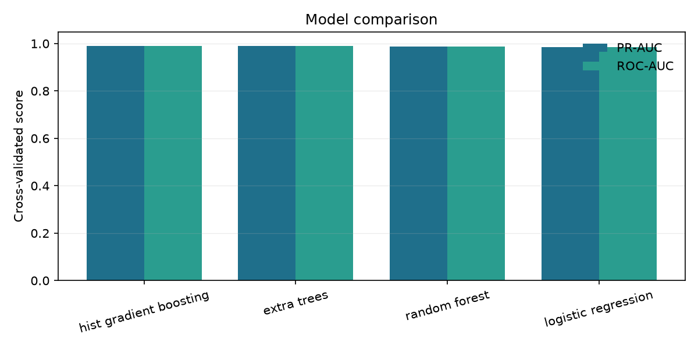
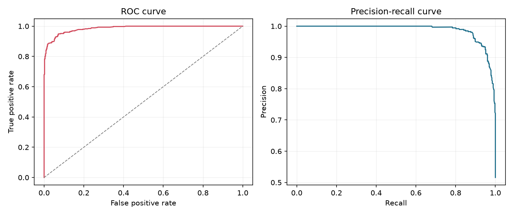
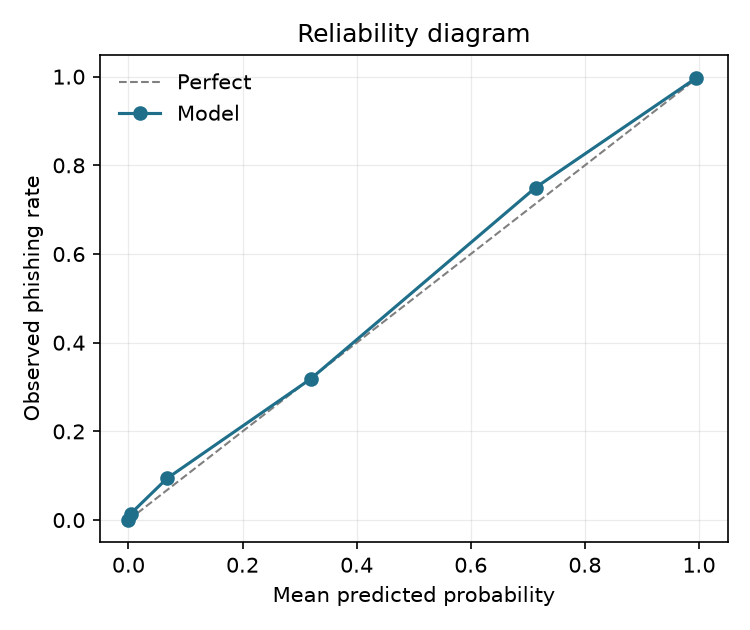
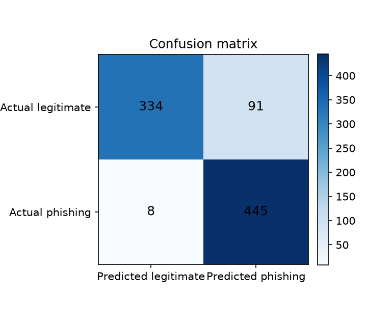
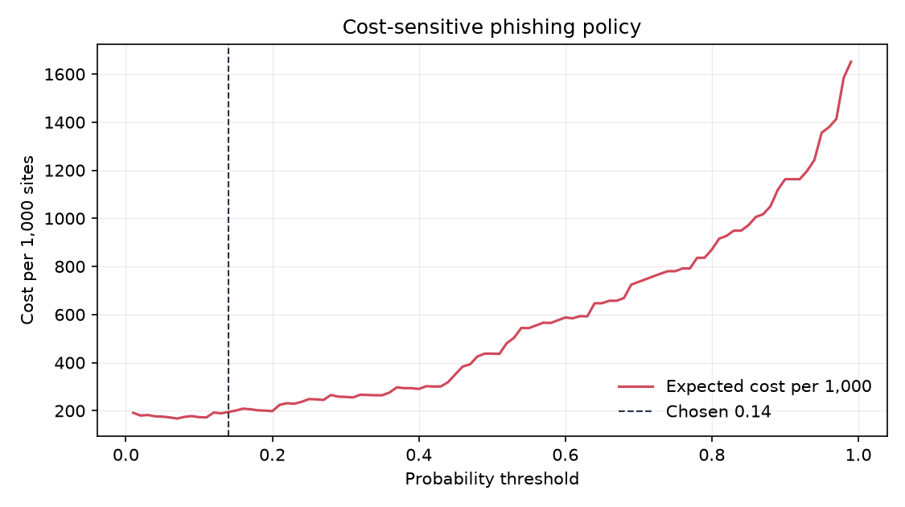
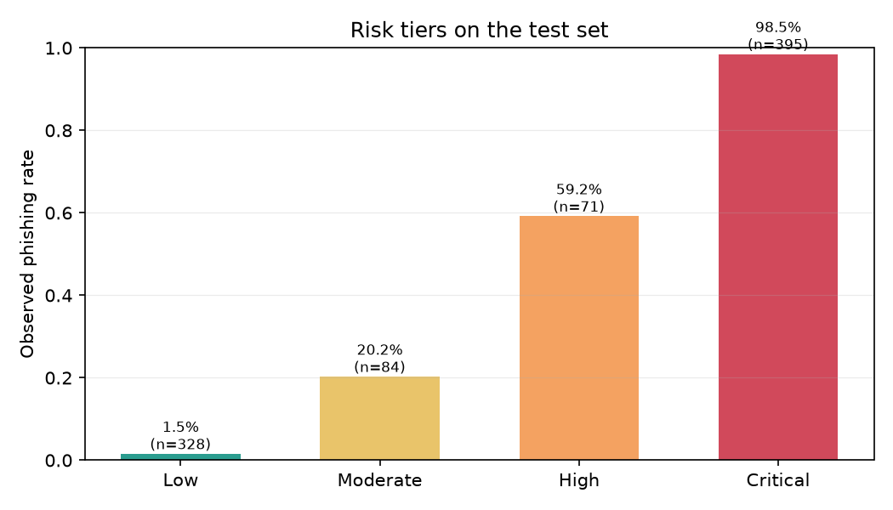
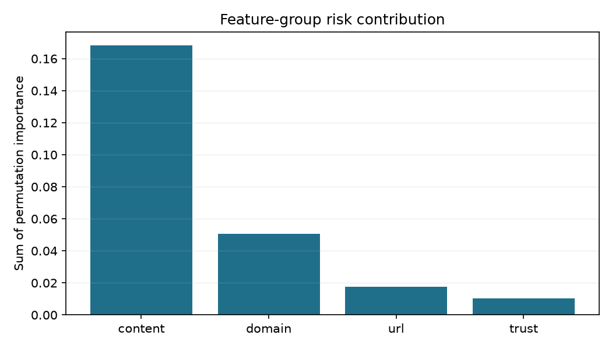
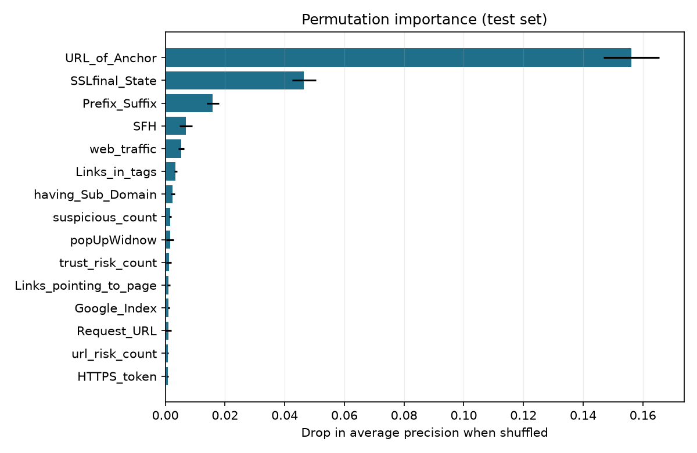

What this project demonstrates
Thirty UCI indicators are aggregated by URL, domain, content and trust families, then modelled with four classifiers. The winner is calibrated and a cost-sensitive threshold is selected on validation. Feature-group attribution shows which indicator families drive risk.
Selected model: hist gradient boosting - Threshold: 0.14 - Cost ratio: 10:1
Model comparison
| Model | CV PR-AUC | CV ROC-AUC |
|---|---|---|
| hist gradient boosting | 0.9907 | 0.9895 |
| extra trees | 0.9902 | 0.9889 |
| random forest | 0.9884 | 0.9864 |
| logistic regression | 0.9857 | 0.9838 |

Test-set evaluation




Risk tiers
| Tier | Sites | Phishing | Observed phishing rate |
|---|---|---|---|
| Low | 328 | 5 | 1.52% |
| Moderate | 84 | 17 | 20.24% |
| High | 71 | 42 | 59.15% |
| Critical | 395 | 389 | 98.48% |

Feature groups
| Group | Features | Importance | Top feature |
|---|---|---|---|
| content | 6 | 0.16840 | URL_of_Anchor |
| domain | 6 | 0.05076 | SSLfinal_State |
| url | 6 | 0.01771 | Prefix_Suffix |
| trust | 12 | 0.01049 | web_traffic |

Top indicators
| Feature | Mean drop in AP | Std |
|---|---|---|
| URL_of_Anchor | 0.15614 | 0.00935 |
| SSLfinal_State | 0.04649 | 0.00405 |
| Prefix_Suffix | 0.01594 | 0.00211 |
| SFH | 0.00690 | 0.00223 |
| web_traffic | 0.00535 | 0.00090 |
| Links_in_tags | 0.00347 | 0.00053 |
| having_Sub_Domain | 0.00250 | 0.00061 |
| suspicious_count | 0.00160 | 0.00035 |
| popUpWidnow | 0.00158 | 0.00124 |
| trust_risk_count | 0.00117 | 0.00093 |
| Links_pointing_to_page | 0.00115 | 0.00054 |
| Google_Index | 0.00115 | 0.00037 |

Reproduce
python scripts/fetch_data.pypython -m phishing.pipelinepython -m phishing.cli checkstreamlit run dashboard/app.py
Full write-up: RESULTS.md - METHODOLOGY.md - MODEL_CARD.md